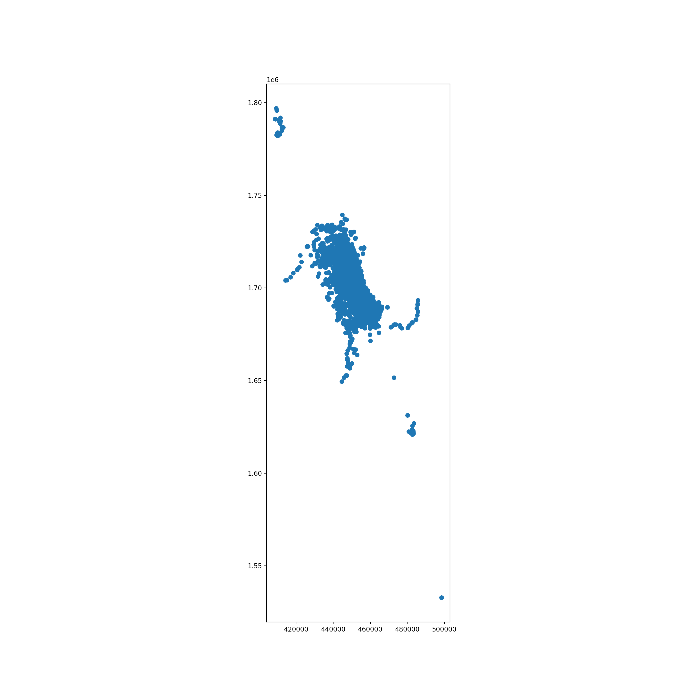
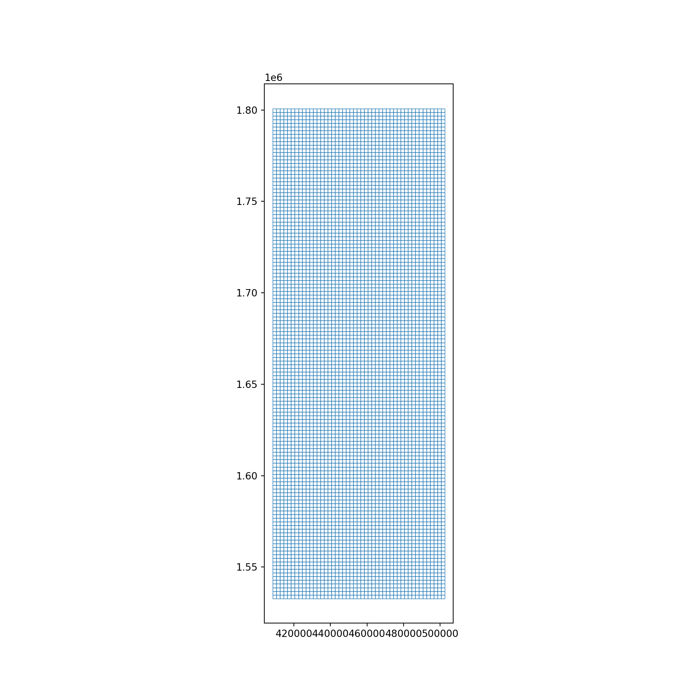
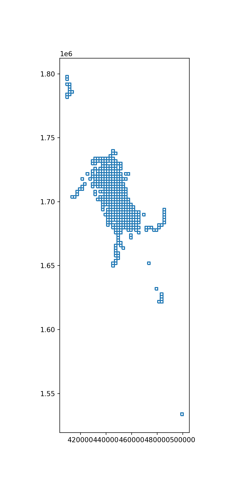
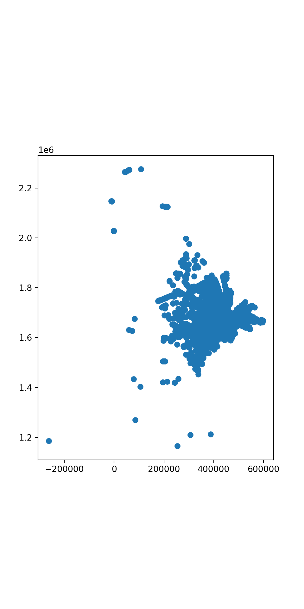
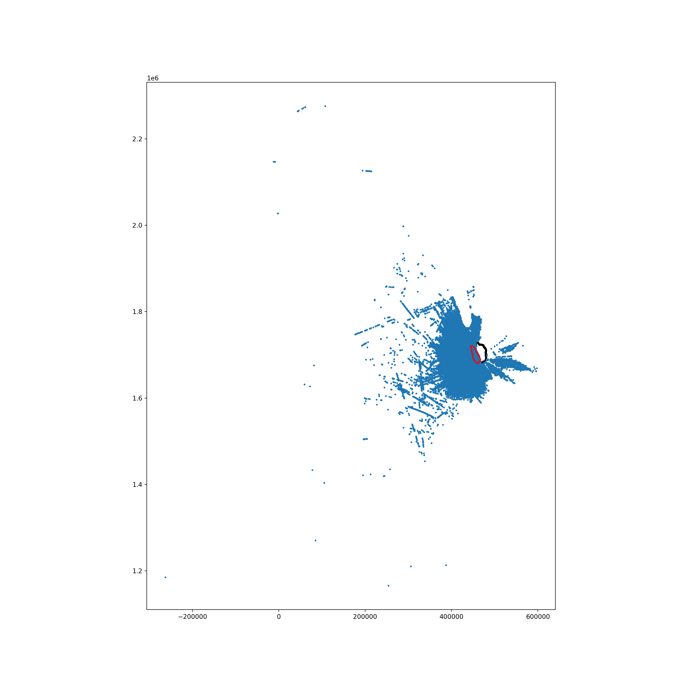

This analysis identifies a speed reduction zone off the island of Dominica for the purpose of reducing the occurrence of ships striking whales and quantifies the impact of reduced travel speeds on marine traffic.
Setup
import pandas as pd
import geopandas as gpd/Users/marierivers/Library/r-miniconda/envs/r-reticulate/lib/python3.8/site-packages/geopandas/_compat.py:112: UserWarning: The Shapely GEOS version (3.10.3-CAPI-1.16.1) is incompatible with the GEOS version PyGEOS was compiled with (3.10.4-CAPI-1.16.2). Conversions between both will be slow.
warnings.warn(import os
import matplotlib.pyplot as plt
import numpy as np
import shapely
import contextily as ctx
import pygeosDominica outline
# Define path to folder
input_folder = r"data/dominica"
# Join folder path and filename
fp = os.path.join(input_folder, "dma_admn_adm0_py_s1_dominode_v2.shp")
# Print out the full file path
print(fp)data/dominica/dma_admn_adm0_py_s1_dominode_v2.shpdata/dominica/dma_admn_adm0_py_s1_dominode_v2.shp# Read file using gpd.read_file()
dominica = gpd.read_file(fp)type(dominica)<class 'geopandas.geodataframe.GeoDataFrame'>dominica.head() ADM0_PCODE ADM0_EN geometry
0 DM Dominica POLYGON ((-61.43023 15.63952, -61.43019 15.639...dominica.crs<Geographic 2D CRS: EPSG:4326>
Name: WGS 84
Axis Info [ellipsoidal]:
- Lat[north]: Geodetic latitude (degree)
- Lon[east]: Geodetic longitude (degree)
Area of Use:
- name: World.
- bounds: (-180.0, -90.0, 180.0, 90.0)
Datum: World Geodetic System 1984 ensemble
- Ellipsoid: WGS 84
- Prime Meridian: Greenwich# change the projection to Dominica 1945 / British West Indies Grid (metric units)
proj_area_crs = 2002 # project area coordinate system EPSG code. Projected CRS for Dominica is 2002
dominica = dominica.to_crs(epsg=proj_area_crs)dominica.crs<Derived Projected CRS: EPSG:2002>
Name: Dominica 1945 / British West Indies Grid
Axis Info [cartesian]:
- E[east]: Easting (metre)
- N[north]: Northing (metre)
Area of Use:
- name: Dominica - onshore.
- bounds: (-61.55, 15.14, -61.2, 15.69)
Coordinate Operation:
- name: British West Indies Grid
- method: Transverse Mercator
Datum: Dominica 1945
- Ellipsoid: Clarke 1880 (RGS)
- Prime Meridian: GreenwichPlot the Dominica outline
ax = dominica.plot(color="none", figsize=(9, 9))
ctx.add_basemap(ax, crs=dominica.crs.to_string())
ax.grid(True)Whale sighting data
Whale habitat was approximated using data from approximately 5,000 whale sightings between 2008 and 2015.
# Define path to folder
input_folder2 = r"data"
# Join folder path and filename
fp2 = os.path.join(input_folder2, "sightings2005_2018.csv")
# Print out the full file path
print(fp2)data/sightings2005_2018.csv# Read file using gpd.read_file()
whales = gpd.read_file(fp2)type(whales)<class 'geopandas.geodataframe.GeoDataFrame'>whales.head() field_1 GPStime Lat Long geometry
0 0 2005-01-15 07:43:27 15.36977117 -61.49328433 None
1 1 2005-01-15 08:07:13 15.3834075 -61.503702 None
2 2 2005-01-15 08:31:17 15.38106333 -61.50486067 None
3 3 2005-01-15 09:19:10 15.33532083 -61.46858117 None
4 4 2005-01-15 10:08:00 15.294224 -61.45318517 None# bootstrap the geometries
whale_points = gpd.points_from_xy(whales['Long'], whales['Lat'])
whale_gdf = gpd.GeoDataFrame(whales, geometry=whale_points)whale_gdf.head() field_1 GPStime ... Long geometry
0 0 2005-01-15 07:43:27 ... -61.49328433 POINT (-61.49328 15.36977)
1 1 2005-01-15 08:07:13 ... -61.503702 POINT (-61.50370 15.38341)
2 2 2005-01-15 08:31:17 ... -61.50486067 POINT (-61.50486 15.38106)
3 3 2005-01-15 09:19:10 ... -61.46858117 POINT (-61.46858 15.33532)
4 4 2005-01-15 10:08:00 ... -61.45318517 POINT (-61.45319 15.29422)
[5 rows x 5 columns]type(whale_gdf)<class 'geopandas.geodataframe.GeoDataFrame'># project the dataset into an appropriate CRS
whale_gdf = whale_gdf.set_crs(epsg=4326)
whale_gdf = whale_gdf.to_crs(epsg=proj_area_crs)whale_gdf.crs<Derived Projected CRS: EPSG:2002>
Name: Dominica 1945 / British West Indies Grid
Axis Info [cartesian]:
- E[east]: Easting (metre)
- N[north]: Northing (metre)
Area of Use:
- name: Dominica - onshore.
- bounds: (-61.55, 15.14, -61.2, 15.69)
Coordinate Operation:
- name: British West Indies Grid
- method: Transverse Mercator
Datum: Dominica 1945
- Ellipsoid: Clarke 1880 (RGS)
- Prime Meridian: Greenwichfig, ax = plt.subplots(figsize=(15,15), dpi=100)
whale_gdf.plot(ax=ax)
Create grid
xmin, ymin, xmax, ymax = whale_gdf.total_bounds
cell_size = 2000
length = 2000
width = 2000
xs = list(np.arange(xmin, xmax + width, width)) # return evenly spaced values starting at xmin, stopping (but not including) at xmax+width, by a step of width
ys = list(np.arange(ymin, ymax + length, length))xmin, ymin, xmax, ymax(408480.65208368783, 1532792.7459409237, 498500.3049570159, 1796964.3997029224)# function to convert corner points into a cell polygon
def make_cell(x, y, cell_size):
ring = [
(x, y),
(x + cell_size, y),
(x + cell_size, y + cell_size),
(x, y + cell_size)
]
cell = shapely.geometry.Polygon(ring)
return cell# iterate over each combination of x and y coordinates in two nested for loops
cells = []
for x in xs:
for y in ys:
cell = make_cell(x, y, cell_size)
cells.append(cell)grid = gpd.GeoDataFrame({'geometry':cells}, crs=proj_area_crs)
#grid.to_file("grid.shp")grid.head() geometry
0 POLYGON ((408480.652 1532792.746, 410480.652 1...
1 POLYGON ((408480.652 1534792.746, 410480.652 1...
2 POLYGON ((408480.652 1536792.746, 410480.652 1...
3 POLYGON ((408480.652 1538792.746, 410480.652 1...
4 POLYGON ((408480.652 1540792.746, 410480.652 1...grid.crs<Derived Projected CRS: EPSG:2002>
Name: Dominica 1945 / British West Indies Grid
Axis Info [cartesian]:
- E[east]: Easting (metre)
- N[north]: Northing (metre)
Area of Use:
- name: Dominica - onshore.
- bounds: (-61.55, 15.14, -61.2, 15.69)
Coordinate Operation:
- name: British West Indies Grid
- method: Transverse Mercator
Datum: Dominica 1945
- Ellipsoid: Clarke 1880 (RGS)
- Prime Meridian: Greenwichfig, ax = plt.subplots(figsize=(10,10), dpi=100)
grid.boundary.plot(ax=ax, linewidth = 0.5)
base = dominica.plot(facecolor='none', edgecolor='black', linewidth=2, figsize=(15, 15))
whale_gdf.plot(ax=base, facecolor='red', markersize=2)
grid.boundary.plot(ax=base, linewidth = 0.5)
ctx.add_basemap(ax=base, crs=dominica.crs.to_string())Extract whale habitat
# spatially join the grid with whale sighting data to count the number of sightings in each cell
# use an inner join since we're not interested in grid cells without any sightings
whale_grid = grid.sjoin(whale_gdf, how="inner")
whale_grid geometry ... Long
124 POLYGON ((408480.652 1780792.746, 410480.652 1... ... -61.896866
124 POLYGON ((408480.652 1780792.746, 410480.652 1... ... -61.900766
124 POLYGON ((408480.652 1780792.746, 410480.652 1... ... -61.903366
125 POLYGON ((408480.652 1782792.746, 410480.652 1... ... -61.900116
125 POLYGON ((408480.652 1782792.746, 410480.652 1... ... -61.897716
... ... ... ...
5171 POLYGON ((484480.652 1690792.746, 486480.652 1... ... -61.194134
5172 POLYGON ((484480.652 1692792.746, 486480.652 1... ... -61.19188
6030 POLYGON ((498480.652 1532792.746, 500480.652 1... ... -61.0794355
6030 POLYGON ((498480.652 1532792.746, 500480.652 1... ... -61.0794355
6030 POLYGON ((498480.652 1532792.746, 500480.652 1... ... -61.0794355
[4893 rows x 6 columns]whale_grid.boundary.plot(figsize=(5,10))
whale_grid.crs<Derived Projected CRS: EPSG:2002>
Name: Dominica 1945 / British West Indies Grid
Axis Info [cartesian]:
- E[east]: Easting (metre)
- N[north]: Northing (metre)
Area of Use:
- name: Dominica - onshore.
- bounds: (-61.55, 15.14, -61.2, 15.69)
Coordinate Operation:
- name: British West Indies Grid
- method: Transverse Mercator
Datum: Dominica 1945
- Ellipsoid: Clarke 1880 (RGS)
- Prime Meridian: Greenwichgrid['count'] = whale_grid.groupby(whale_grid.index).count()['index_right']
grid geometry count
0 POLYGON ((408480.652 1532792.746, 410480.652 1... NaN
1 POLYGON ((408480.652 1534792.746, 410480.652 1... NaN
2 POLYGON ((408480.652 1536792.746, 410480.652 1... NaN
3 POLYGON ((408480.652 1538792.746, 410480.652 1... NaN
4 POLYGON ((408480.652 1540792.746, 410480.652 1... NaN
... ... ...
6293 POLYGON ((500480.652 1790792.746, 502480.652 1... NaN
6294 POLYGON ((500480.652 1792792.746, 502480.652 1... NaN
6295 POLYGON ((500480.652 1794792.746, 502480.652 1... NaN
6296 POLYGON ((500480.652 1796792.746, 502480.652 1... NaN
6297 POLYGON ((500480.652 1798792.746, 502480.652 1... NaN
[6298 rows x 2 columns]# subset the grid dataframe to cells that have more than 20 sightings
whale_mask = (grid['count'] > 20)
whale_mask0 False
1 False
2 False
3 False
4 False
...
6293 False
6294 False
6295 False
6296 False
6297 False
Name: count, Length: 6298, dtype: boolwhale_habitat = grid[whale_mask]speed_reduction_zone = whale_habitat.unary_union.convex_hull
speed_reduction_zone<shapely.geometry.polygon.Polygon object at 0x7fb1914383d0>type(speed_reduction_zone)
# need to create a new GeoDataFrame with the speed_reduction_zone as a single feature<class 'shapely.geometry.polygon.Polygon'>speed_reduction_zone = gpd.GeoDataFrame(index=[0], crs='epsg:2002', geometry=[speed_reduction_zone])speed_reduction_zone.crs<Derived Projected CRS: EPSG:2002>
Name: Dominica 1945 / British West Indies Grid
Axis Info [cartesian]:
- E[east]: Easting (metre)
- N[north]: Northing (metre)
Area of Use:
- name: Dominica - onshore.
- bounds: (-61.55, 15.14, -61.2, 15.69)
Coordinate Operation:
- name: British West Indies Grid
- method: Transverse Mercator
Datum: Dominica 1945
- Ellipsoid: Clarke 1880 (RGS)
- Prime Meridian: Greenwichtype(speed_reduction_zone)<class 'geopandas.geodataframe.GeoDataFrame'>base = dominica.plot(facecolor='none', edgecolor='black', linewidth=3, figsize=(15, 15))
speed_reduction_zone.plot(ax=base, facecolor='lightgray', edgecolor='red', alpha=0.5, linewidth=5)
ctx.add_basemap(ax=base, crs=dominica.crs.to_string())Vessel data
Vessel data was obtained from Automatic Identification System (AIS) tranceivers from 2015.
Load data
# Join folder path and filename
fp3 = os.path.join(input_folder2, "station1249.csv")
# Print out the full file path
print(fp3)data/station1249.csv# Read file using gpd.read_file()
vessels = gpd.read_file(fp3)type(vessels)<class 'geopandas.geodataframe.GeoDataFrame'>vessels.head<bound method NDFrame.head of field_1 MMSI LON LAT TIMESTAMP geometry
0 0 233092000 -61.84788 15.23238 2015-05-22 13:53:26 None
1 1 255803280 -61.74397 15.96114 2015-05-22 13:52:57 None
2 2 329002300 -61.38968 15.29744 2015-05-22 13:52:32 None
3 3 257674000 -61.54395 16.2334 2015-05-22 13:52:24 None
4 4 636092006 -61.52401 15.81954 2015-05-22 13:51:23 None
... ... ... ... ... ... ...
617257 238722 256525000 -61.40679 15.36907 2015-05-21 21:34:59 None
617258 238723 311077100 -61.37539 15.27406 2015-05-21 21:34:55 None
617259 238724 377907247 -61.39461 15.30672 2015-05-21 21:34:46 None
617260 238725 253365000 -61.49001 16.14007 2015-05-21 21:34:46 None
617261 238726 329002300 -61.48073 15.44751 2015-05-21 21:34:45 None
[617262 rows x 6 columns]># bootstrap the geometries
vessel_points = gpd.points_from_xy(vessels['LON'], vessels['LAT'])
vessel_gdf = gpd.GeoDataFrame(vessels, geometry=vessel_points)# project the dataset into an appropriate CRS
vessel_gdf = vessel_gdf.set_crs(epsg=4326)
vessel_gdf = vessel_gdf.to_crs(epsg=proj_area_crs)vessel_gdf.crs<Derived Projected CRS: EPSG:2002>
Name: Dominica 1945 / British West Indies Grid
Axis Info [cartesian]:
- E[east]: Easting (metre)
- N[north]: Northing (metre)
Area of Use:
- name: Dominica - onshore.
- bounds: (-61.55, 15.14, -61.2, 15.69)
Coordinate Operation:
- name: British West Indies Grid
- method: Transverse Mercator
Datum: Dominica 1945
- Ellipsoid: Clarke 1880 (RGS)
- Prime Meridian: Greenwichvessel_gdf['TIMESTAMP'] = pd.to_datetime(vessel_gdf['TIMESTAMP'])vessel_gdf.head() field_1 MMSI ... TIMESTAMP geometry
0 0 233092000 ... 2015-05-22 13:53:26 POINT (415373.315 1683307.035)
1 1 255803280 ... 2015-05-22 13:52:57 POINT (426434.345 1763918.193)
2 2 329002300 ... 2015-05-22 13:52:32 POINT (464555.392 1690588.725)
3 3 257674000 ... 2015-05-22 13:52:24 POINT (447770.634 1794068.620)
4 4 636092006 ... 2015-05-22 13:51:23 POINT (450006.361 1748297.844)
[5 rows x 6 columns]# plot of all vessel points
vessel_gdf.plot(figsize=(5,10))
# plot of all vessel points
base = dominica.plot(facecolor='none', edgecolor='black', linewidth=3, figsize=(15, 15))
vessel_gdf.plot(ax=base, markersize = 3)
speed_reduction_zone.plot(ax=base, edgecolor='red', linewidth=2)
# spatially subset AIS data to only include vessels within identified whale habitat
vessels_in_whale_habitat = vessel_gdf.sjoin(speed_reduction_zone, how="inner")
vessels_in_whale_habitat field_1 MMSI ... geometry index_right
2 2 329002300 ... POINT (464555.392 1690588.725) 0
7 7 338143127 ... POINT (463892.452 1694650.397) 0
13 13 329002300 ... POINT (464555.389 1690589.831) 0
15 15 338143015 ... POINT (463910.683 1694655.978) 0
16 16 338143127 ... POINT (463697.964 1694341.275) 0
... ... ... ... ... ...
617252 238717 329002300 ... POINT (453901.647 1709712.916) 0
617253 238718 338143015 ... POINT (463915.972 1694683.643) 0
617255 238720 338143127 ... POINT (463905.177 1694705.734) 0
617259 238724 377907247 ... POINT (464023.288 1691613.624) 0
617261 238726 329002300 ... POINT (454741.236 1707161.130) 0
[167411 rows x 7 columns]Calculate distance and speed
# plot of only vessel points within speed reduction zone
base = dominica.plot(facecolor='none', linewidth=3, figsize=(15, 15))
speed_reduction_zone.plot(ax=base, facecolor='none', edgecolor='red', linewidth=3)
vessels_in_whale_habitat.plot(ax=base, markersize = 0.5, facecolor='black')
ctx.add_basemap(ax=base, crs=dominica.crs.to_string())# sort vessel dataframe by MMSI and time
vessels_in_whale_habitat = vessels_in_whale_habitat.sort_values(by=['MMSI', 'TIMESTAMP'])
vessels_in_whale_habitat field_1 MMSI ... geometry index_right
235025 235025 203106200 ... POINT (462476.396 1680935.224) 0
235018 235018 203106200 ... POINT (462283.995 1681393.698) 0
235000 235000 203106200 ... POINT (461936.769 1682722.187) 0
234989 234989 203106200 ... POINT (461798.818 1683708.377) 0
234984 234984 203106200 ... POINT (461654.150 1683997.765) 0
... ... ... ... ... ...
259103 259103 983191049 ... POINT (465250.372 1690066.434) 0
259094 259094 983191049 ... POINT (465243.965 1690054.249) 0
258954 258954 983191049 ... POINT (465226.597 1690121.667) 0
258930 258930 983191049 ... POINT (465242.895 1690053.140) 0
258206 258206 983191049 ... POINT (465272.964 1690049.908) 0
[167411 rows x 7 columns]# create a copy of the vessel dataframe and shift each observation down one row using `shift()`
vessels_shift = vessels_in_whale_habitat.copy(deep=True).shift(periods=1)# rename shifted column names
vessels_shift = vessels_shift.rename(columns={"field_1": "field_1_shift", "MMSI": "MMSI_shift", "LON": "LON_shift", "LAT": "LAT_shift", "TIMESTAMP": "TIMESTAMP_shift", "geometry": "geometry_shift", "index_right": "index_right_shift"})# join original dataframe with the shifted copy using `join()`
vessels_shift_join = vessels_in_whale_habitat.join(vessels_shift).sort_values(by=['MMSI', 'TIMESTAMP'])# drop all rows in the joined dataframe in which the MMSI of the left is not the same as the one on the right
vessels_keep = vessels_shift_join.drop(vessels_shift_join[vessels_shift_join['MMSI'] != vessels_shift_join['MMSI_shift']].index)# set the geometry column
vessels_keep = vessels_keep.set_geometry("geometry")
vessels_keep2 = vessels_keep.set_geometry("geometry_shift")# calculate distance between each observation
vessels_keep['distance_m'] = vessels_keep.distance(vessels_keep2)# calculate time difference between each observation to the next
vessels_keep['time'] = vessels_keep['TIMESTAMP'] - vessels_keep['TIMESTAMP_shift']# calculate speed
meters_per_nm = 1852
vessels_keep['speed_m_per_sec'] = vessels_keep['distance_m'] / vessels_keep['time'].dt.total_seconds()
vessels_keep['speed_knots'] = vessels_keep['speed_m_per_sec'] * 60 * 60 / meters_per_nm
vessels_keep['time_10knots_minutes'] = (vessels_keep['distance_m'] * 60 ) / ( meters_per_nm * 10 )
vessels_keep['time_dif_minutes'] = vessels_keep['time_10knots_minutes'] - (vessels_keep['time'].dt.total_seconds() / 60 )
vessels_keep field_1 MMSI ... time_10knots_minutes time_dif_minutes
235018 235018 203106200 ... 1.610828 -0.889172
235000 235000 203106200 ... 4.448540 -3.034793
234989 234989 203106200 ... 3.226109 -1.773891
234984 234984 203106200 ... 1.048164 -1.468503
234972 234972 203106200 ... 1.394116 -3.589217
... ... ... ... ... ...
259103 259103 983191049 ... 0.043139 -5.940194
259094 259094 983191049 ... 0.044599 -4.355401
258954 258954 983191049 ... 0.225548 -55.824452
258930 258930 983191049 ... 0.228202 -11.471798
258206 258206 983191049 ... 0.097976 -248.585358
[166255 rows x 20 columns]vessels_keep = vessels_keep.sort_values(by=['speed_knots'], ascending=False)# look at the vessels that would be affected by the speed reduction zone
vessels_going_too_fast = vessels_keep.drop(vessels_keep[vessels_keep['time_dif_minutes'] < 0].index)
vessels_going_too_fast field_1 MMSI ... time_10knots_minutes time_dif_minutes
585844 207309 341387000 ... 0.209101 0.209101
67091 67091 227528210 ... 7.979167 6.245834
66925 66925 228008600 ... 13.481637 10.498303
499754 121219 329002300 ... 8.728323 6.711656
546817 168282 329002300 ... 12.866650 9.849984
... ... ... ... ... ...
616429 237894 636091437 ... 0.000000 0.000000
616427 237892 636091437 ... 0.000000 0.000000
616422 237887 636091437 ... 0.000000 0.000000
616419 237884 636091437 ... 0.000000 0.000000
616408 237873 636091437 ... 0.000000 0.000000
[21410 rows x 20 columns]shipping_impact_minutes = vessels_going_too_fast['time_dif_minutes'].sum()
shipping_impact_days = round(shipping_impact_minutes / ( 60 * 24), 2)
shipping_impact_days27.88A 10-knot reduced speed zone in the identified whale habitat will increase travel time by approximately 27.88 days.
Citation
BibTeX citation:
@online{rivers2022,
author = {Marie Rivers},
title = {Protecting {Whales} from {Ships}},
date = {2022-04-03},
url = {https://marierivers.github.io/posts/2022-04-03-protecting-whales-from-ships/},
langid = {en}
}
For attribution, please cite this work as:
Marie Rivers. 2022. “Protecting Whales from Ships.” April
3, 2022. https://marierivers.github.io/posts/2022-04-03-protecting-whales-from-ships/.